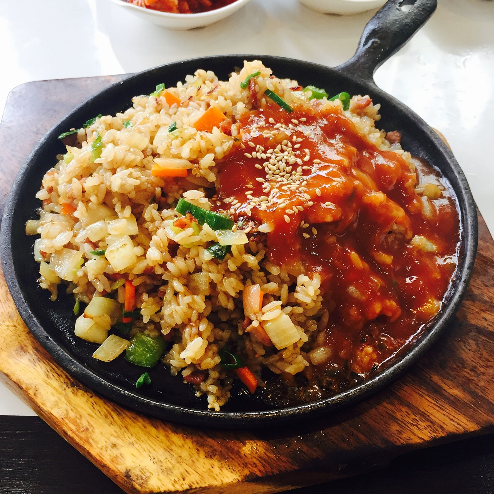

Rice

Preparation and ingredients
Rice is a very common plate at home, so lets enlist ingredients and how to cook it
With this plate you can accompany almos any other food
Ingredients
- 1 pound Rice
- 2 Garlic
- 1 medium size Onion
- Salt
- Water
- Oil
Recipe instructions
- Put the oil in a pot until get hot enought
- Fry garlic and onion, cut in slide
- Add 2 water cup until boil
- Add rice
- Lets cook until water dont cover the rice
- Set little fire
- Cover the pot and let cook for 20 minutes
Now lets enjoy your rice with fry egg and platano
Any sugestion let me know it!!!
Home page